Vancouver, CAN
Vancouver, CAN Los Angeles, USA
Los Angeles, USA Seoul, KOR
Seoul, KOR Auckland, NZL
Auckland, NZL South East Asia, SEA
South East Asia, SEA Oslo, NOR
Oslo, NOR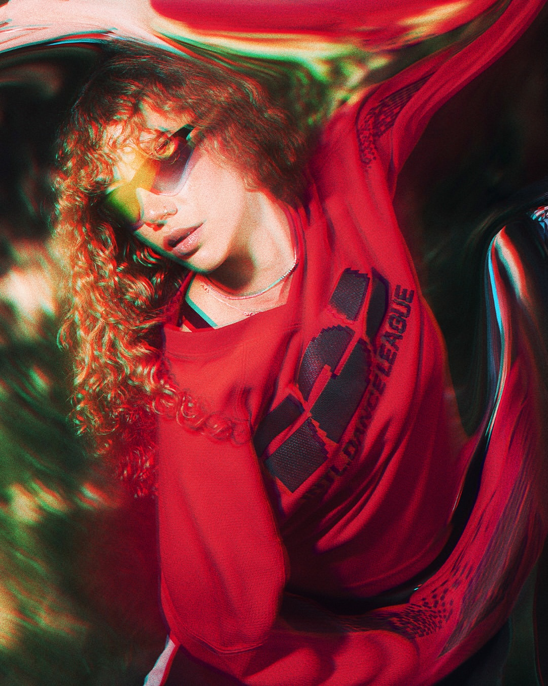
Call time is the tee
The Series Tee goes on first — cut long, dropped shoulder, made to layer under everything that follows. Nothing in the way, nothing to think about.
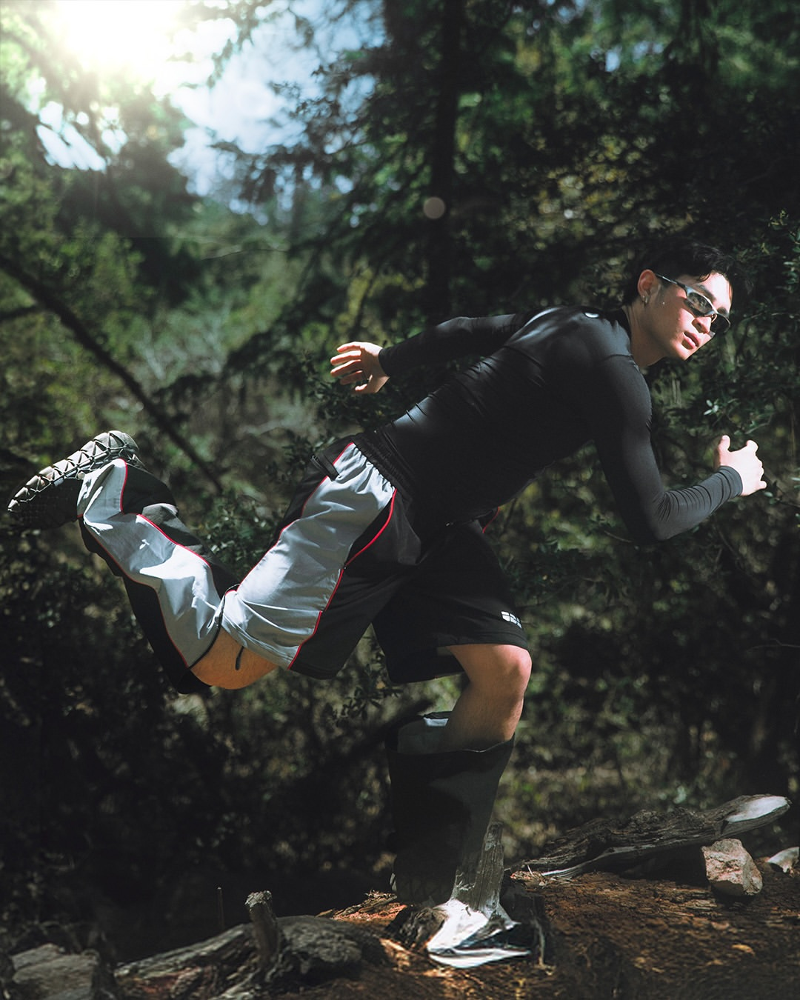
One crew, one warehouse, one full session — from 6am call time to last light. Here is how the kit actually moved.
The Vancouver Capsule
A lookbook is the fastest way to see how a kit actually behaves — how the jersey sits under a hood, how the pants move through a set, which layers hold up between the warehouse and the stage. So we shot the season the same way we shoot the league: on the athletes, in the rooms they train in.
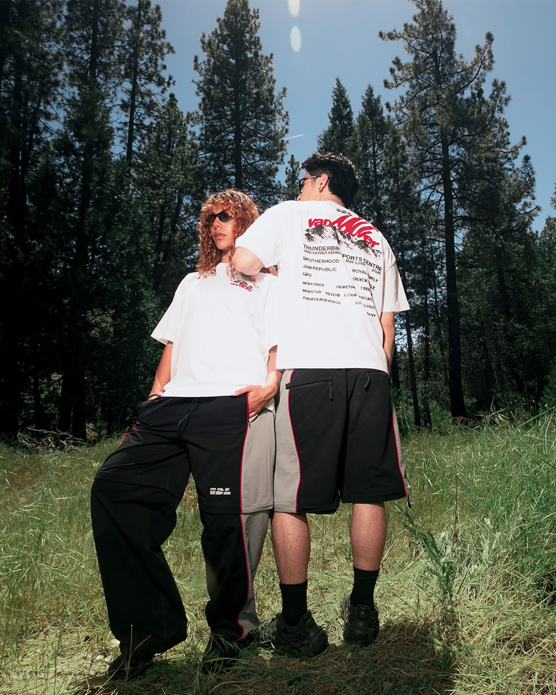
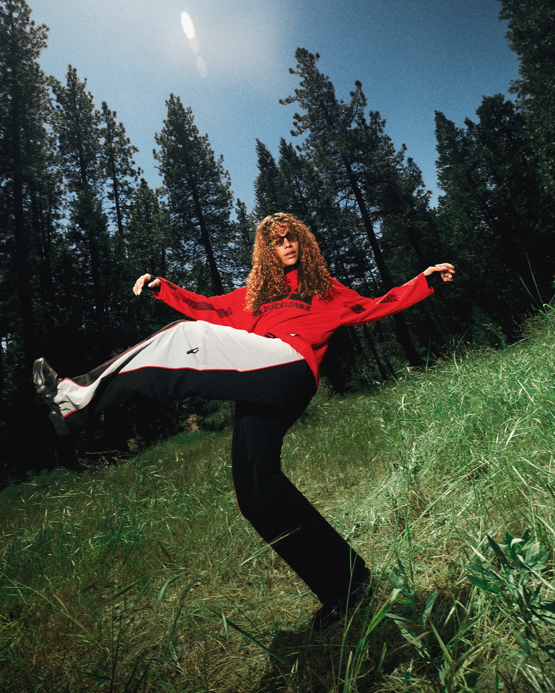
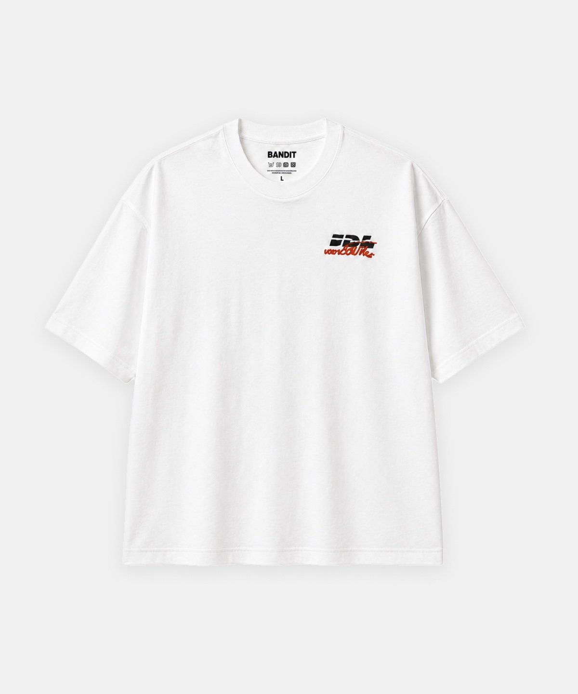
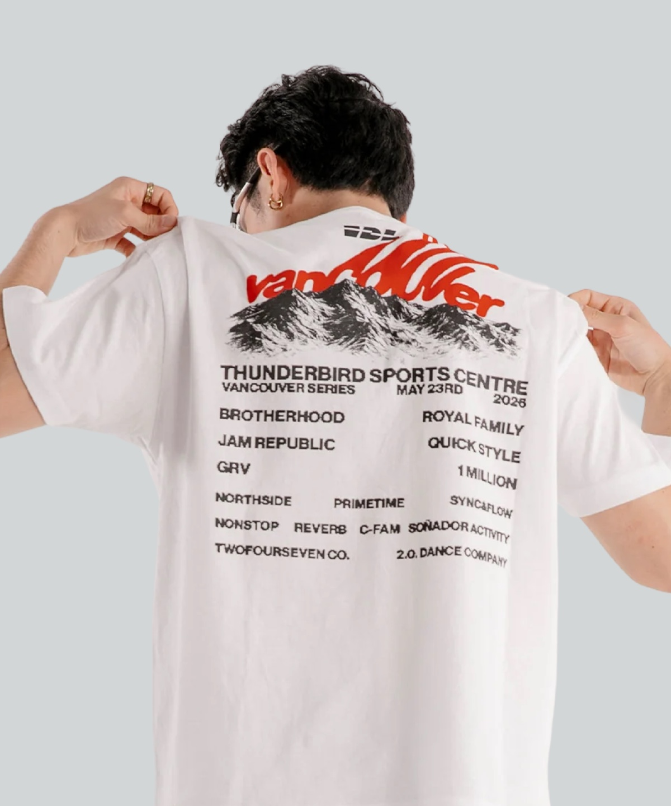
Rp 915.000
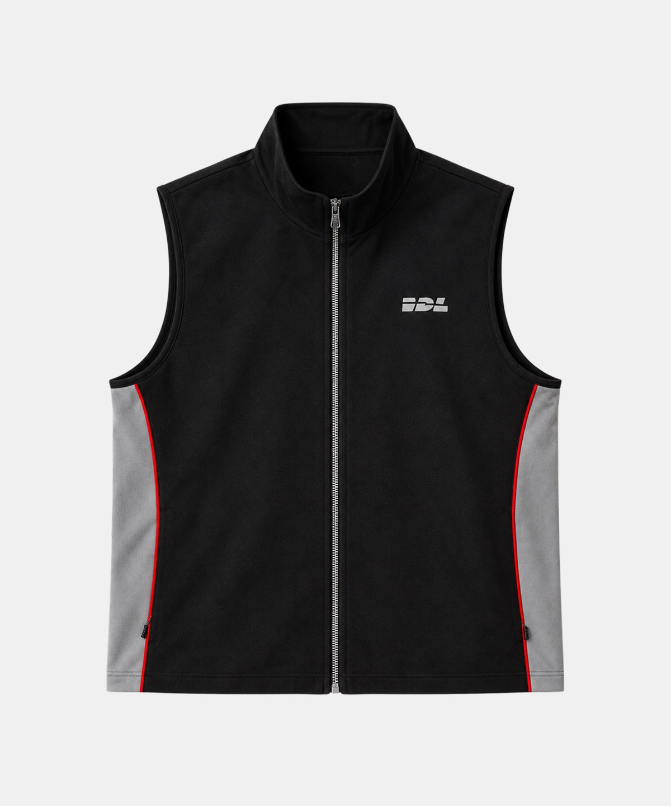
Rp 1.830.000
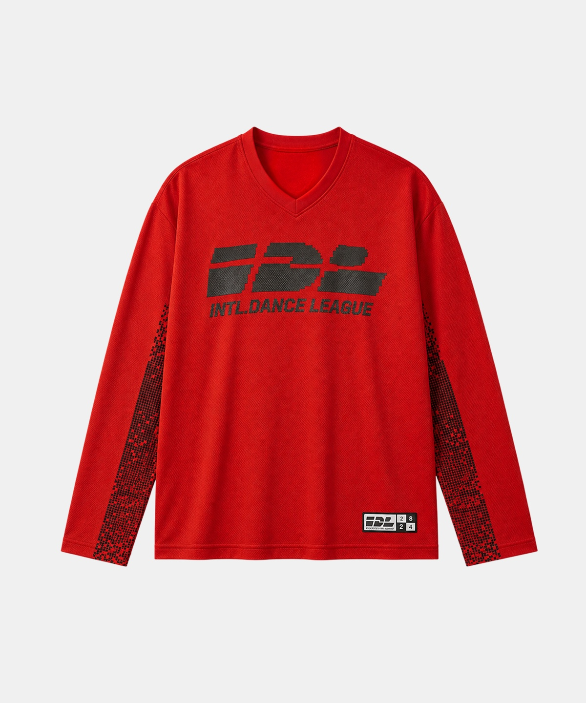
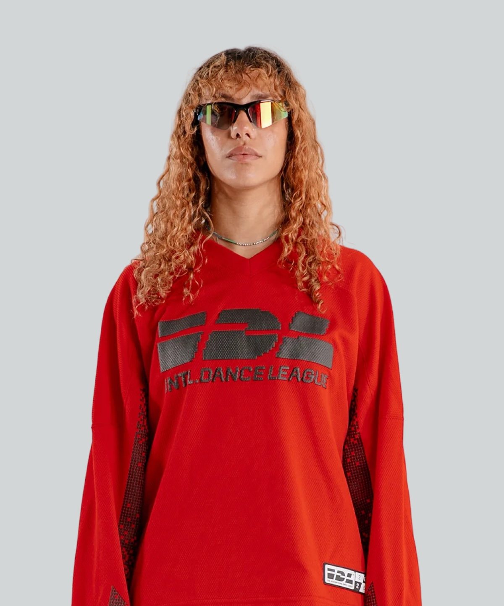
Rp 2.013.000
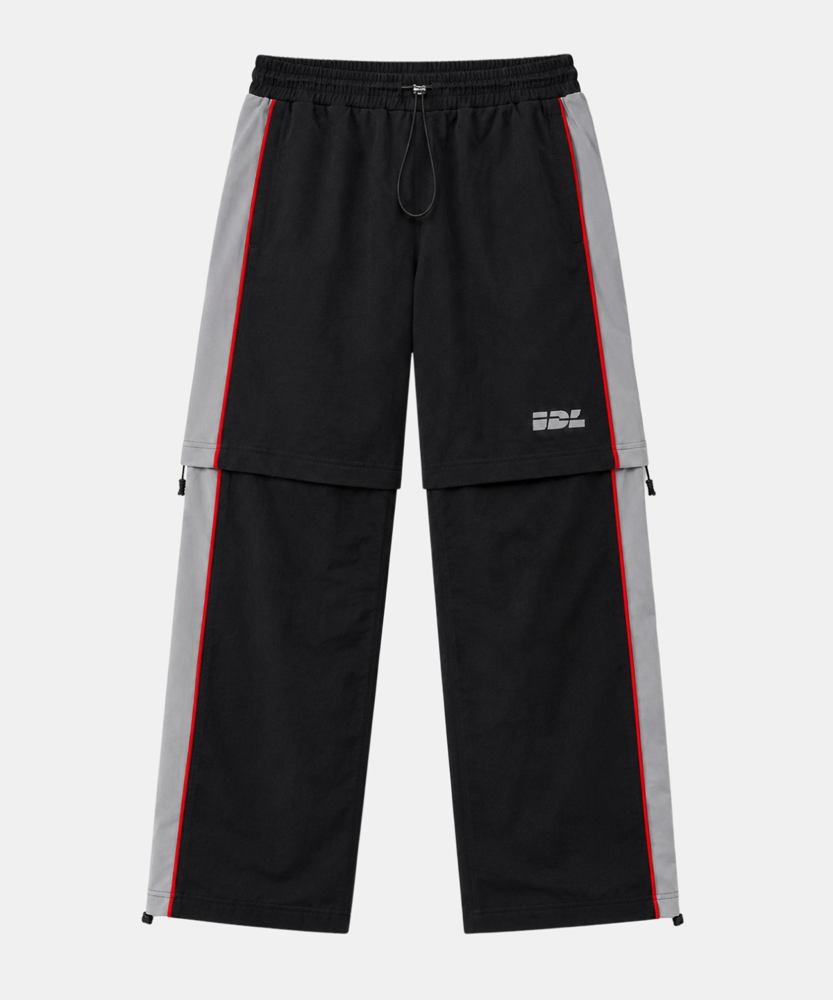
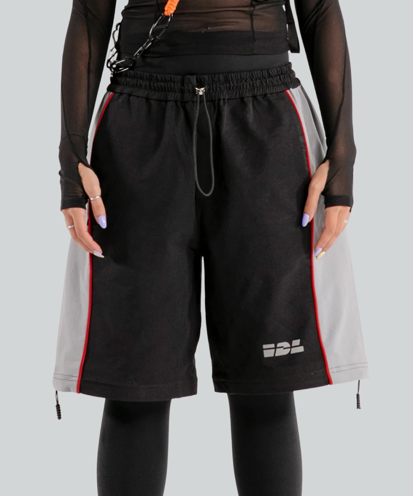
Rp 2.287.000
Season 01 orders ship from Seoul to more than 60 countries, tracked end to end.
Unworn kit goes back within 30 days. Every order ships with a prepaid return label.